Center Console
Center Console Removal/InstallationSpecial Tools Required
KTC trim tool set SOJATP2014 *
* Available through the American Honda Tool and Equipment Program
SRS components are located in this area. Review the SRS component locations, precautions and procedures before doing repairs or service.
NOTE:
- Use the appropriate tool from the KTC trim tool set to avoid damage when prying components.
- Take care not to scratch the front seat, dashboard, and related parts.
1. Remove the passenger's dashboard undercover.
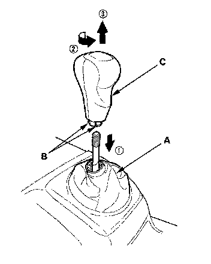
2. Standard M/T model: Lower the shift lever boot (A) to release the hooks (B) from the boot, then remove the shift knob (C).
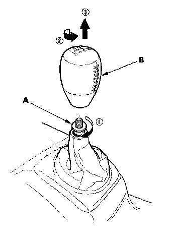
3. Si model: Loosen the locknut (A), then remove the shift knob (B).
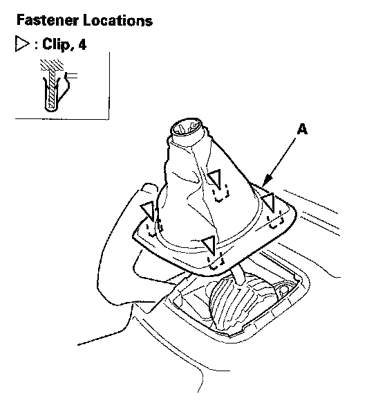
4. Standard M/T model: Detach the clips by pulling the front inner panel (A) up.
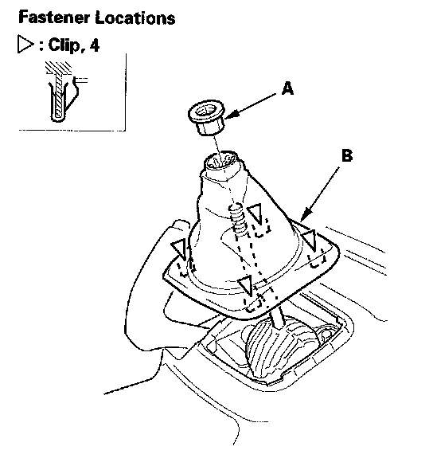
5. Si model: Remove the locknut (A). Detach the clips by pulling the front inner panel (B) up.
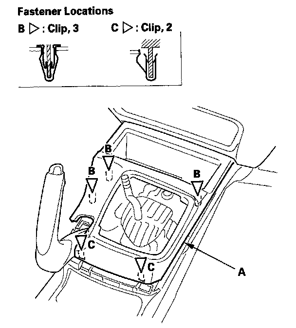
6. Gently pull out along the rear of the center console panel (A) to release the clips (B, C).
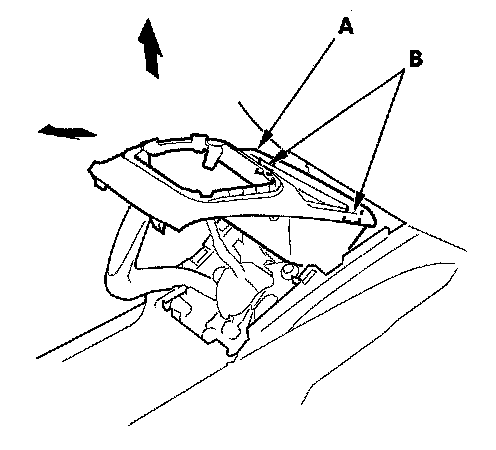
7. Pull the center console panel (A) up and rearward to release the tabs (B).
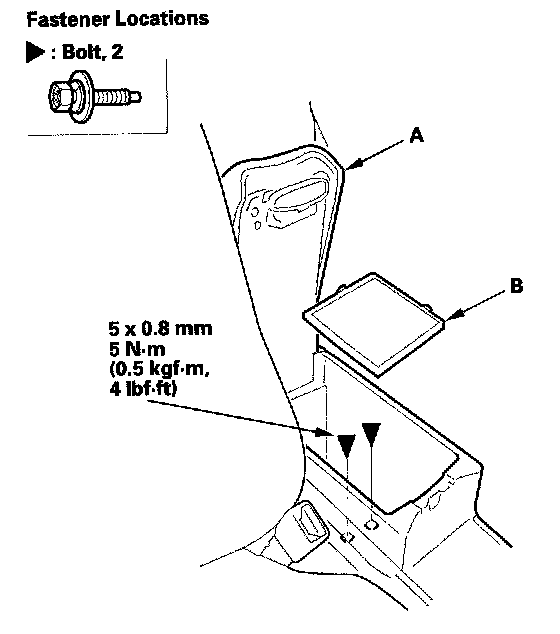
8. Open the armrest (A), then remove the console box mat (B) and bolts.
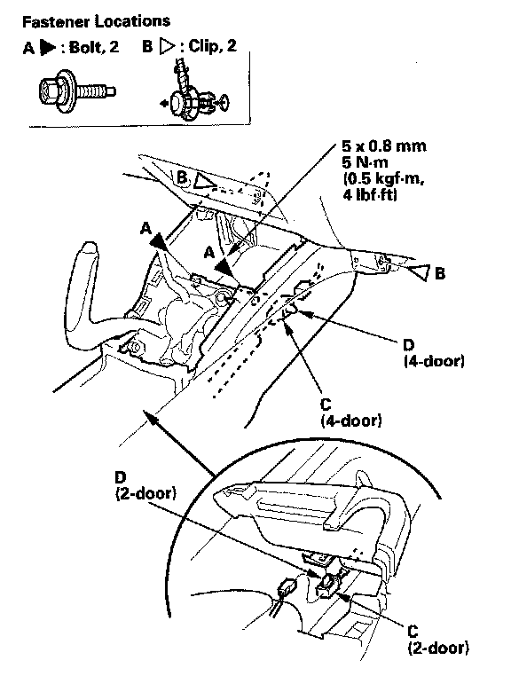
9. From the front portion of the center console, remove the bolts (A) and clips (B), and disconnect the console subharness connector (C), then detach the connector clip (D).
10. Slide both front seats all the way back, and recline the seat-back fully.
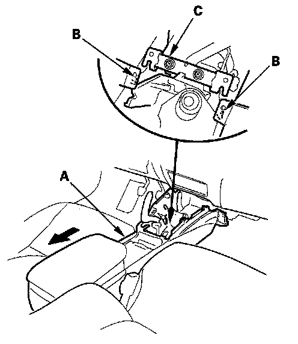
11. Slide the center console (A) rearward to release the pins (B) from the bracket (C).
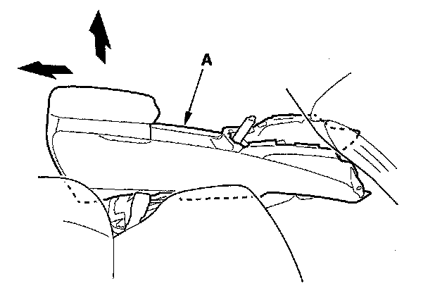
12. Lift up the rear of the console (A), and remove it from the dashboard.
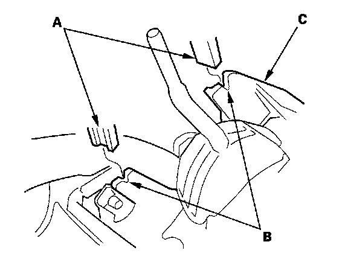
13. Install the console in the reverse order of removal, and note these items:
- Make sure each connector is plugged in properly.
- Check if the clips are damaged or stress-whitened, and if necessary, replace them with new ones.
- Push the clips and hooks into place securely.
- When installing the center console panel, install the tabs (A) into the notch (B) of the parking brake base frame (C).
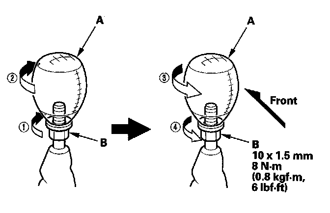
14. Si model: Install the shift knob (A).
1. By hand, thread the locknut (B) on to the shaft unit it bottoms out on the shaft.
2. By hand, thread the shift knob on the shaft.
3. Rotate the shift knob to proper position.
4. Tighten the locknut securely.